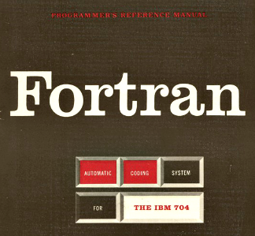

Linguagens de Programação
Historia:
As linguagens de programação são anteriores ao advento do primeiro computador moderno. De início,
as linguagens eram, apenas, códigos. Durante um período de nove meses entre 1842-1843, Ada Lovelace
traduziu as memórias do matemático italiano Luigi Menabrea sobre a mais nova máquina proposta por Charles
Babbage, a sua máquina analítica.[1] Com o artigo, ela anexou uma série de anotações que especificavam em
completo detalhe um método para calcular números de Bernoulli com a máquina, reconhecido por alguns historiadores
como o primeiro programa de computador do mundo. Mas alguns biógrafos debatem a medida de suas contribuições
originais versus as de seu mérito. O tear de Jacquard, inventado em 1801, usava furos em cartões
perfurados
para representar os movimentos do braço do tear ao realizar costuras, a fim de gerar padrões decorativos
automaticamente. Herman Hollerith percebeu que poderia codificar a informação, em cartões perfurados, quando
ele observou que o condutor de trens controlava a presença dos titulares dos bilhetes de trem com a posição dos
furos no bilhete. Hollerith, então, começou a codificar os dados do censo de 1890 em cartões perfurados.
Na década de 1950 as primeiras três linguagens de programação modernas, cujos descendentes ainda estão em uso
difundido hoje foram concebidas:

FORTRAN (1954), a "FORmula TRANslator", inventada por John Backus e outros.;
LISP, a "LISt Processor", inventada por John McCarthy e outros.;
COBOL, a COmmon Business Oriented Language, criada pelo Short Range Committee, com grande influência
de Grace Hopper.
Outro marco na década de 1950 foi a publicação, por um comitê de cientistas americanos e europeus, de "uma nova
linguagem
para os algoritmos", a ALGOL 60 através da publicação do relatório "The ALGOL 60 Report (the "ALGOrithmic
Language")".
Este relatório consolidou muitas ideias que circulavam na época e apresentou duas inovações chave quanto ao
projeto de
linguagens:Estrutura de blocos aninhados: pedaços significativos de código poderiam ser agrupados em bloco de
instruções, sem ter que ser transformados em procedimentos separados e ser explicitamente chamados;
Escopo léxico: um bloco podia ter suas próprias variáveis não acessíveis fora do bloco, e muito menos manipuláveis
de
fora do bloco.Outra inovação, relacionada a esta última, foi na forma como a linguagem foi descrita:
Uma notação matemática exata, Backus-Naur (BNF), foi utilizada para descrever a sintaxe da linguagem.
Quase todas as
linguagens de programação posteriores utilizaram uma variante da BNF para descrever a parte livre de contexto de
sua
sintaxe.
Algol 60 foi particularmente influente na concepção das linguagens posteriores, algumas das quais
logo se tornaram
mais populares.
Criadores de Linguagens:
James Gosling
James Gosling é um programador canadense, mais conhecido como o pai da linguagem de programação Java. osling programou a versão original do editor de texto emacs para UNIX, e antes de se juntar a Sun Mic rosystems construiu uma versão de UNIX para máquinas multiprocessadas, assim como diversos compiladores e sistemas de mensagens eletrônicas.
Dennis Ritchie
Dennis MacAlistair Ritchie (Bronxville, 9 de setembro de 1941 — Berkeley Heights, 12 de outubro de 2011)[1][2] foi um cientista da computação estadunidense, notável pela sua influência em linguagens de programação como ALTRAN, B, BCPL e C, e em sistemas operacionais como o Multics e o UNIX.

Guido van Rossum
Guido van Rossum (Haarlem, 31 de janeiro de 1956 [1]) é um matemático e programador de computadores holandês, mais conhecido por ser o autor da linguagem de programação Python. Na comunidade Python, ele é conhecido como Benevolent Dictator for Life (BDFL), o que significa que ele continua a supervisionar o processo de desenvolvimento do Python.

Brendan Eich
Brendan Eich é um programador de computadores americano e criador da linguagem de programação JavaScript. Ex-chefe do escritório de tecnologia na Mozilla Corporation. Brendan Eich conseguiu seu bacharelado em matemática e ciência da computação pela Santa Clara University. Conseguiu seu diploma de mestrado em 1986 pela University of Illinois at Urbana-Champaign.